[1] Chức năng điều khiển các thiết bị DLNA tương tác với nhau
[2] Chức năng chia sẽ dữ liệu trên thiết bị di động với các thiết bị tương thích DLNA khác
[3] Chức năng chia sẽ video từ Youtube với các thiết bị tương thích DLNA khác
[5] Chức năng lưu các mục nội dung theo playlist
[6] Chức năng tương tác với các thẻ NFC
[1] Chức năng điều khiển các thiết bị DLNA tương tác với nhau
Ở chức năng này PocketSharing sẽ điều khiển sự tương tác giữa các thiết bị DLNA khác, cụ thể là điều khiển Renderer lấy nội dung mà người dùng muốn xem từ Server và phát nội dung đó.
Để sử dụng chức năng này người dùng thực hiện theo các bước sau:
- Từ màn hình chính của ứng dụng, chỉ định Renderer muốn điều khiển và chọn Server để duyệt và tìm nội dung muốn phát.
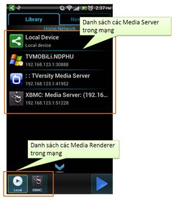
- Các Server sẽ tổ chức gom nhóm các mục nội dung theo cấu trúc tập tin/thư mục để người dùng dễ dàng tìm kiếm nội dung mong muốn. PocketSharing sẽ hiển thị đúng theo cấu trúc nguyên bản mà Server cung cấp:
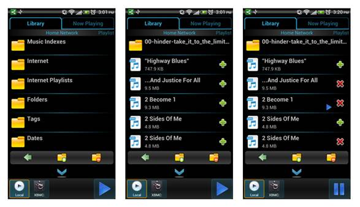
+ Các thư mục sẽ có hình ảnh đại diện là .Chạm lên thư mục để duyệt các mục nội dung có trong thư mục đó.
+ Các mục được chia sẽ sẽ gồm các hình ảnh đại diện như:
· : mục chia sẽ là một đoạn âm thanh.
· : mục chia sẽ là một video.
· : mục chia sẽ là một hình ảnh. Tuy nhiên, trong hầu hết các trường hợp, PocketSharing sẽ hiển thị các mục hình ảnh dưới dạng thumbnail của hình ảnh đó.
+ Chạm lên một mục nội dung để ngay lập tức phát nội dung đó lên Renderer đang điều khiển. Nội dung này đồng thời cũng được thêm vào playlist đang phát.
+ Chạm và giữ lên một mục nội dung để tải nội dung đó về điện thoại.
+ Sử dụng nút để quay về thư mục cấp cao hơn. Chạm và giữ nút trong khoảng 2 giây để ngay lập tức quay về danh sách các Media Server trong mạng.
+ Ký hiệu đánh dấu nội dung đang được phát trên Renderer.
+ Sử dụng nút để thêm một nội dung đơn lẻ vào playlist đang phát.
+ Những mục nội dung có hiển thị nút cho biết nội dung đó đã tồn tại trong playlist đang phát. Sử dụng nút để xóa nội dung khỏi playlist đang phát.
+
Sử dụng nút  để
thêm tất cả các mục nằm trong thư mục
đang duyệt vào playlist đang phát.
để
thêm tất cả các mục nằm trong thư mục
đang duyệt vào playlist đang phát.
+ Sử dụng nút để xóa tất cả cái mục nằm trong thư mục đang duyệt ra khỏi playlist đang phát.
- Điều khiển Renderer trong quá trình phát nội dung:
+ PocketSharing có cung cấp nút để điều khiển nhanh Renderer thực hiện các thao tác play/pause trên nội dung đang phát.
+ Các chức năng điều khiển Renderer được cung cấp ở tab NowPlaying:
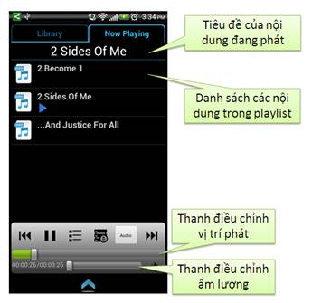
+ Sử dụng nút để tạm dừng hay để tiếp tục phát nội dung hiện hành trên Renderer.
+ Sử dụng nút để hiển thị danh sách các playlist.
+ Sử dụng nút để hiển thị danh sách các nội dung trong playlist đang phát. Phần này sẽ hữu dụng khi người dùng đang xem các nội dung như hình hay video ngay trên điện thoại, khi đó danh sách các nội dung trên playlist sẽ không được hiển thị như đang nghe nhạc.
+ Sử dụng nút để phát nội dung tiếp theo trên playlist.
+ Sử dụng nút để quay lại nội dung trước đó trong playlist.
+ Sử dụng nút để lọc các nội dung theo thể loại. Có 4 chế độ lọc:
· All Items: tất cả các nội dung sẽ được hiển thị:
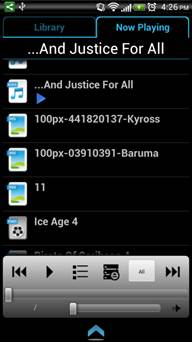
· Video Only: chỉ các Video được hiển thị, nếu đang điều khiển một Renderer khác thì PocketSharing sẽ hiển thị danh sách các Video, ngược lại sẽ hiển thị nội dung của Video đó ngay trên điện thoại:
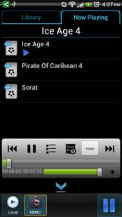
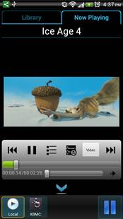
· Music Only: PocketSharing sẽ hiển thị danh sách các nội dung thuộc dạng âm thanh trong playlist:
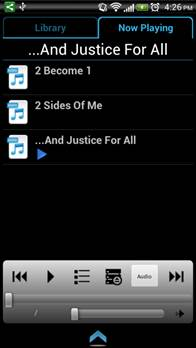
· Image Only: PocketSharing sẽ hiển thị hình ảnh hiện tại, người dùng có thể sử dụng các nút , hoặc lướt ngón tay sang trái, phải trên màn hình điện thoại để chuyển qua lại giữa các bức ảnh trong playlist đang chọn. Nội dung của bức hình đang xem trên điệnt thoại cũng chính là nội dung được phát trên Renderer đang điều khiển.
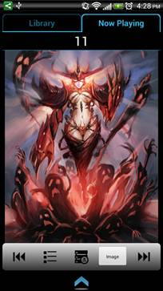
[2] Chức năng chia sẽ dữ liệu trên thiết bị di động với các thiết bị tương thích DLNA khác
Ở chức năng này, PocketSharing cho phép chia sẽ các nội dung đa phương tiện từ điện thoại sang các thiết bị tương thích DLNA khác trong mạng gia đình. PocketSharing sẽ cung cấp một Media Server, hoạt động như các Media Server khác trong mạng, gom nhóm các nội dung theo thể loại, bao gồm nhạc, hình và video.
Thêm vào đó, thông qua action “Share” của Android, người dùng có thể chọn và chia sẽ một nội dung trên điện thoại (thông qua PocketSharing) cho các Media Renderer khác khi đang sử dụng một chương trình quản lý tập tin bất kỳ hoặc từ ứng dụng Gallery của điện thoại.
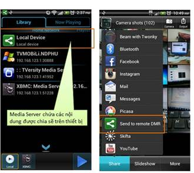
PocketSharing cho phép người dùng cập nhật danh sách các nội dung được chia sẽ sau khi có thay đổi như thêm, xóa, sửa trên hệ thống tập tin đa phương tiện của điện thoại thông qua một mục lựa chọn trên Menu:

Vì quá trình quét được diễn ra một cách tự động do đó để có thể quản lý tốt các nội dung nào muốn chia sẽ hay không, người dùng còn được cung cấp một số tùy chỉnh trong phần Settings của ứng dụng:
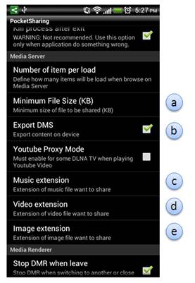
- Mục (a): Dung lượng tối thiểu của một tập tin muốn chia sẽ. Hệ thống sẽ bỏ qua các nội dung có dung lượng nhỏ hơn mức này. Giới hạn hợp lý sẽ giúp người dùng có thể loại bỏ các nội dung không cần thiết.
- Mục (b): Cho phép PocketSharing chia sẽ Media Server này cho các thiết bị thuộc dạng Controller (DMC) hoặc Player (DMP) nhìn thấy và duyệt qua các nội dung được chia sẽ hay không.
- Mục (c): Định nghĩa phần mở rộng của các tập tin đa phương tiện sẽ được liệt kê trong thư mục Music. Mặc định là mp3, wma, midi, wav, mid.
- Mục (d): Định nghĩa phần mở rộng của các tập tin đa phương tiện sẽ được liệt kê trong thư mục Video. Mặc định là mp4, flv, mpg, avi, mkv, m4v, wmv.
- Mục (e): Định nghĩa phần mở rộng của các tập tin đa phương tiện sẽ được liệt kê trong thư mục Image. Mặc định là jpeg, jpg, gif, png, bmp.
[3] Chức năng chia sẽ video từ Youtube với các thiết bị tương thích DLNA khác
Với chức năng này PocketSharing chia sẽ các nội dung từ Youtube cho các thiết bị hỗ trợ DLNA khác trong mạng.
Để sử dụng chức năng này, người dùng thực hiện các bước sau đây:
- Trên tab Library người dùng sử dụng ngón tay lướt từ phải sang trái để đi đến màn hình tìm kiếm nội dung từ Youtube. Đồng thời chọn Media Renderer muốn phát nội dung từ Youtube.
- Nhập từ khóa tìm kiếm và sử dụng nút để bắt đầu tìm các video theo từ khóa đó trên Youtube.
- Từ danh sách trả về, người dùng chạm để chọn video muốn phát. Trong quá trình phát, PocketSharing cũng cung cấp chức năng điều khiển Renderer như đã trình bày ở trên.
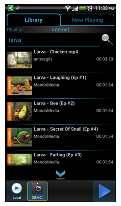
[4] Chức năng xem các nội dung được chia sẽ từ các thiết bị tương thích DLNA khác ngay trên thiết bị di động
PocketSharing cung cấp một Renderer cục bộ (gọi là Local Media Renderer) cho phép xem các nội dung đa phương tiện ngay trên thiết bị cài đặt ứng dụng. Renderer này cho phép người dùng sử dụng các chức năng điều khiển play/pause/seek, tăng giảm âm lượng như khi điều khiển một Media Renderer khác. Lưu ý: Local Media Renderer chỉ được sử dụng nội bộ trên từng thiết bị, nghĩa là các Controller (DMC) bên ngoài không thể tìm thấy và điều khiển.
Để sử dụng Renderer trên thiết bị, người dùng chọn Local Renderer để điều khiển, sau đó chọn nội dung muốn xem như khi điều khiển một Renderer bên ngoài.

PocketSharing còn cung cấp một số tùy chỉnh trên Local Renderer như chất lượng khi hiển thị các mục chia sẽ thuộc loại hình ảnh, cho phép zoom ảnh hay không... Các tùy chỉnh này có thể được tìm thấy trong phần Settings của ứng dụng.
[5] Chức năng lưu các mục nội dung theo playlist
Ứng dụng cho phép lưu lại playlist để người dùng có thể lưu và xem lại các nội dung được ưa thích mỗi lần sử dụng ứng dụng.
Để sử dụng chức năng này, trên Tab Library người dùng lướt ngón tay trên màn hình để đi đến màn hình quản lý playlist. Trên màn hình này sẽ liệt kê danh sách các playlist đã được lưu trữ. Chạm vào một playlist để xem danh sách các nội dung trong playlist đó. Sử dụng nút để quay lại danh sách các playlist.
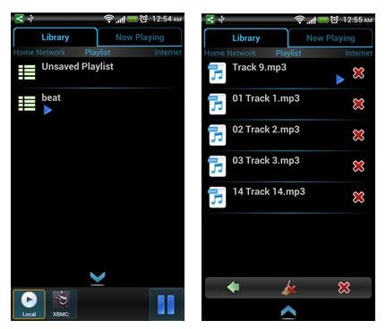
PocketSharing sẽ tạo sẵn một Playlist có tên là Unsaved, các nội dung mặc định sẽ được thêm vào đây nếu ứng dụng không đang phát một playlist nào. Playlist này sẽ bị xóa mỗi khi thoát ứng dụng.
Từ playlist Unsaved, người dùng có thể chọn nút để lưu lại danh sách các nội dung thành một playlist cố định. Các playlist này sẽ tồn tại qua các lần chạy sau của ứng dụng cho đến khi nào bị xóa. Ngoài ra, khi muốn xóa dữ liệu của playlist Unsaved mà không cần thoát ứng dụng, người dùng có thể sử dụng nút để xóa tất cả nội dung của có trong playlist hoặc trên mỗi mục nội dung để xóa từng mục nội dung đơn lẻ.
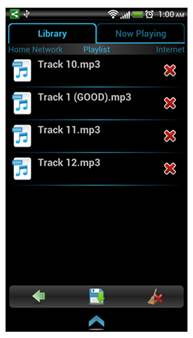
Đối với một playlist cố định, người dùng có thể xóa tất cả nội dung có trong playlist hoặc từng mục nội dung riêng lẻ giống như trên Unsaved playlist. Tuy nhiên PocketSharing còn cho phép xóa hẳn một playlist cố định bằng nút trên thanh công cụ.
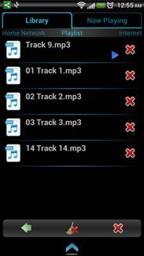
[6] Chức năng tương tác với các thẻ NFC
Chức năng này cho phép người dùng chọn nhanh các thiết bị tương thích DLNA trong mạng thông qua NFC, người dùng không cần chọn thiết bị mà chỉ cần chạm điện thoại với một thẻ NFC đã lưu thông tin của thiết bị đó. Tất nhiên chức năng này chỉ chạy được trên các thiết bị có hỗ trợ NFC và chế độ NFC phải được cho phép sử dụng trong phần tùy chỉnh của điện thoại.
PocketSharing cung cấp chức năng đọc và ghi lên thẻ NFC. Trước tiên người dùng phải ghi thông tin một thiết bị tương thích DLNA vào thẻ NFC. Để ghi thông tin một thiết bị, người dùng chạm và giữ lên thể hiện của thiết bị trong danh sách các Media Server hay Media Renderer. Khi hộp thoại thông tin của thiết bị xuất hiện, chọn nút “Write TAG” để ghi dữ liệu của thiết bị lên thẻ NFC. Sau đó chạm một thẻ NFC bất kỳ dùng để lưu dữ liệu với điện thoại, quá trình ghi sẽ bắt đầu. Kết quả thành công hay thất bại sẽ được thông báo.

Nếu quá trình ghi dữ liệu vào thẻ NFC thành công, khi điện thoại chạm đến thẻ này, PocketSharing sẽ kiểm tra thiết bị tương ứng có đang khả dụng hay không. Nếu quá trình kiểm tra thành công, PocketSharing sẽ tự động chuyển thiết bị đang điều khiển (đối với Media Renderer) hoặc đang duyệt (đối với Media Server) là thiết bị tương ứng với dữ liệu được lưu trong thẻ NFC.